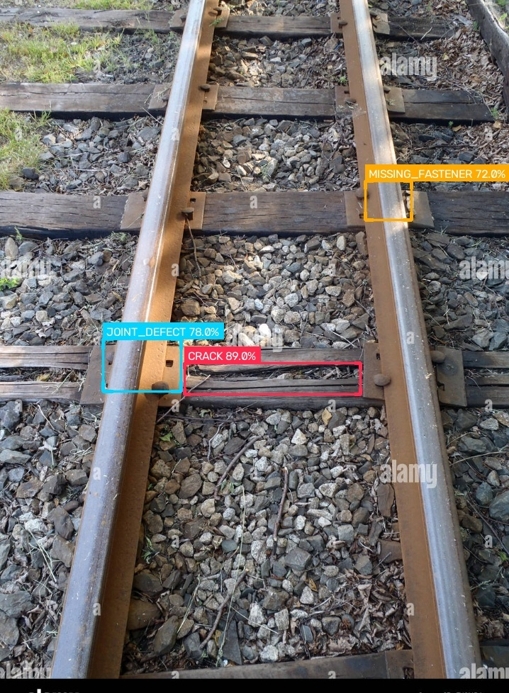

InfeRail
INTELLIGENT, DATA-DRIVEN INSIGHTS
Automate Your
Railway Inspection
InfeRail uses a PyTorch ResNet-18 classifier with CLAHE preprocessing and multi-scale patch scanning to detect track surface cracks and assign maintenance priority tiers. Multi-class defect detection (YOLOv8) and persistent SQLite database logging are scoped to the Streamlit application .

Autonomous Rail Image Ingestion & Analysis
Upload railway track imagery (JPG/PNG) to execute end-to-end CLAHE illumination enhancement, bilateral filtering, ResNet-18 crack classification, and sliding-window patch localisation.
Multi-class defect detection (YOLOv8) and persistent SQLite logging are scoped to the Streamlit application only and are not part of this web demo.
| TIER | LABEL | DEFECT TYPES | RESPONSE | CLASS COLOR |
|---|---|---|---|---|
T1 |
CRITICAL | Broken Rail, Multiple Consecutive Missing Fasteners | Immediate derailment risk — halt operations | Magenta |
T2 |
HIGH | Wide Surface Crack, Broken Fishplate, Joint Defect | Rapid maintenance dispatch within 24h | Crimson |
T3 |
MEDIUM | Minor Spalling, Light Surface Wear, Missing 1 Fastener | Scheduled inspection within 1 week | Amber |
T4 |
MONITOR | Cosmetic Rust, Superficial Surface Flaw | Monitor — log for trend analysis | Cyan |
Web demo: tier is currently derived from classifier probability.